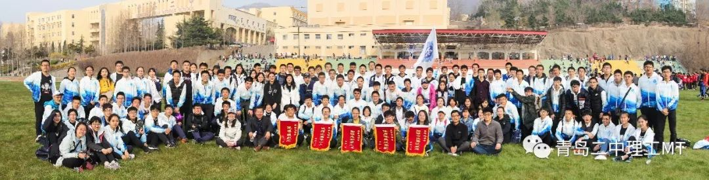

少年挥汗，希望与光明——记2018级理工MT春季运动会
记2018级理工MT春季运动会


2019年4月4日，青岛二中春季运动会在田径场上拉开帷幕。2018级理工全体师生精神饱满、神采飞扬。下面让我们跟随朝阳走进充满希望的球场。
由理工各微团组成的理工第一方队、理工第二方队分别位列第三、第四。本次运动会主题是世界、构建人类命运共同体。2018级理工MT抽到的国家是南非。理工MT的同学们穿着整齐的服装，昂首挺胸，为看台上的领导老师们带来了一场难忘的开幕式表演。
“体育精神是什么？是面对体育生也毫不畏惧，勇敢地踏上赛场。”运动员代表发言道。运动会之所以激动人心，因为它是胜负的角逐，它是自我的证明，它是汗水、泪水的混合，它是运动员的咬牙坚持，它是观众的欢呼雀跃。2018级理工MT的同学在赛道上挥洒着汗水，誓要为团队争得荣誉。最苦最累的1500米和800赛道上，运动员大汗淋漓，旁边也有陪跑的伙伴。看似容易的短跑项目，也是体育精神的表达！这更展现了团队的力量能克服一切苦楚！加油！理工朋友！
趁着中午午休的时间，全体理工同学在操场上进行了航拍大合照。大家穿着浅蓝色团服，躺在青绿色的草坪上，整齐地摆出了“二 中 理 工”四个大字，十分夺目。
赛道上的同学们挥洒着汗水，看台上的同学们也丝毫没有松懈。他们挥动着彩色充气棒，喊着响亮的加油口号，为赛场上的英雄们加油助威。10:30时，全体同学唱响了理工团歌“我们以理工之名，化身二中精灵......”
结束了精彩激烈的比赛，终于迎来了丰收结果的时刻。运动健将们战功显赫，在礼仪和精神方面也收获颇丰。裁判服务团队、运动员、看台观众三方配合，最终获得“团体总分第二名”“体育道德风尚奖”“拔河比赛第一名”“优秀组织奖”“排球对抗赛优胜奖”五面锦旗。
结
尾
用鲁迅先生的一段话作结束语吧：“我每看到运动会时，常常这样想：优胜者固然可敬，但那些虽然落后而非跑至终点不可的竞技者，和见了这样竞技者而肃然不笑的看客，乃是中国将来的脊梁。”
撰文：王昭雯
摄影：朱翔鹭 周瑞骐